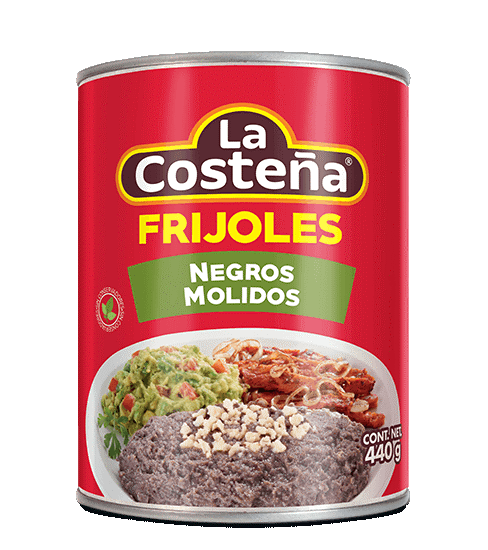
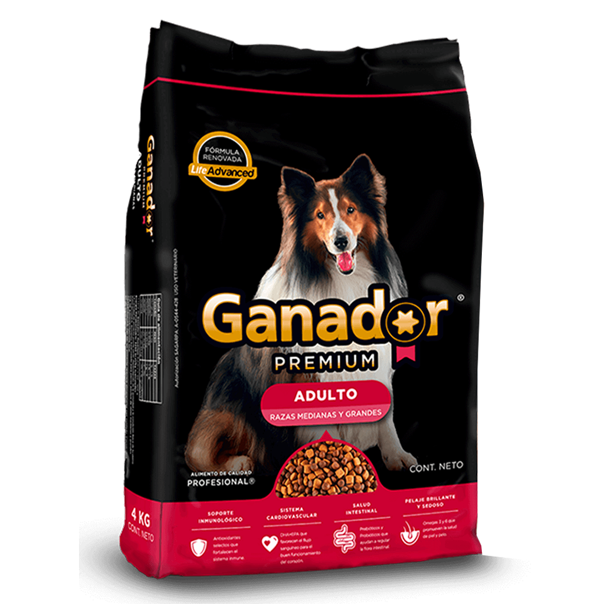
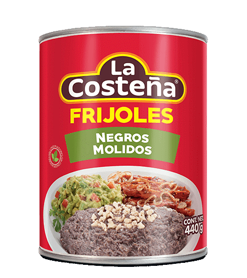
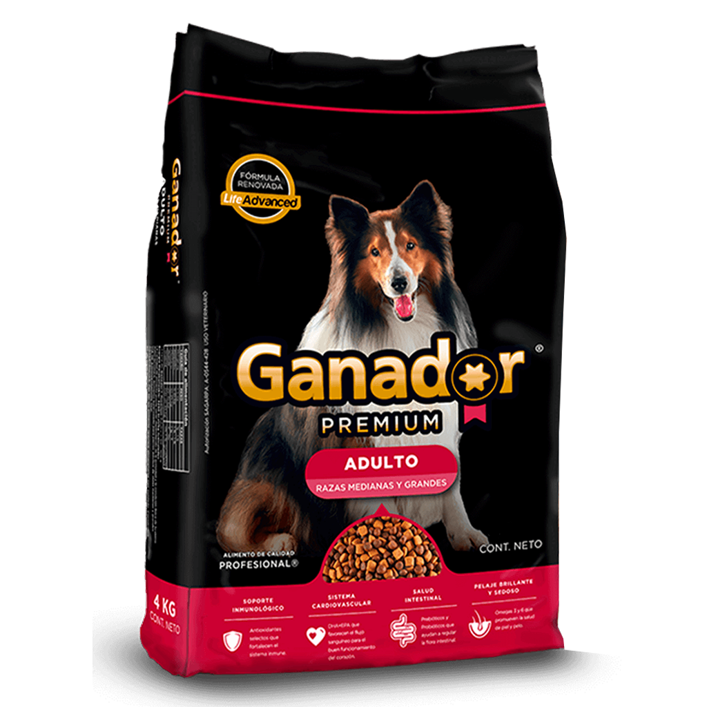

 
 Somos una cadena de supermercados y almacenes, fundada en 1986 por los hermanos Francisco y Armando Martin Borque en Torreon, Coahuila, Mexico En 1971 deciden iniciar un plan de crecimiento acelerado y para mejorar el control y la administración del negocio, instalan las primeras oficinas corporativas del grupo en la ciudad de Torreón, Coahuila, e introducen el sistema detallista para la contabilidad. Si quieres ver la historia completa haz click aqui.